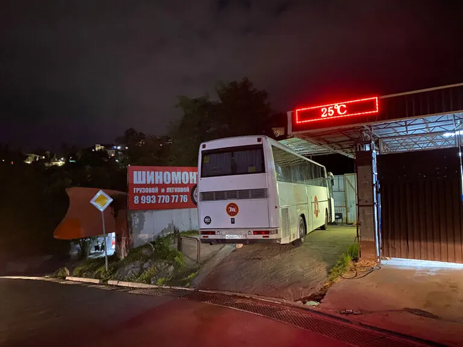
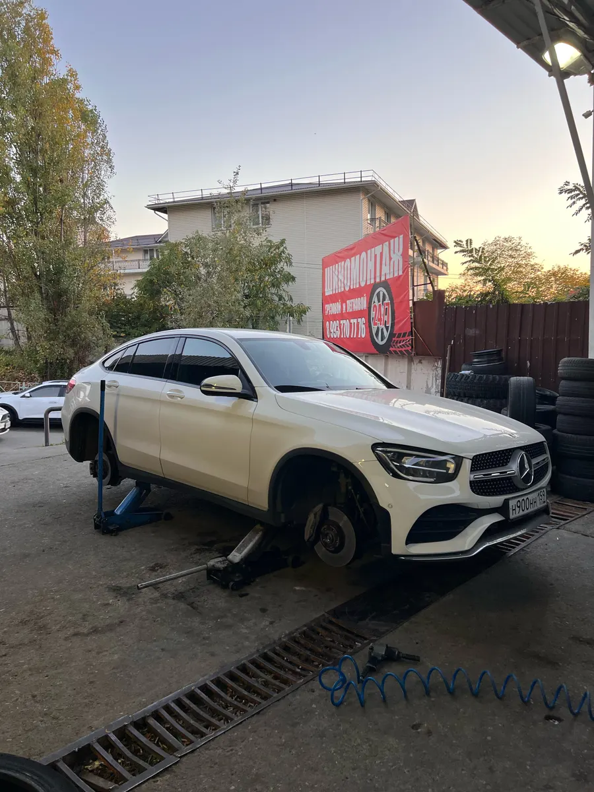
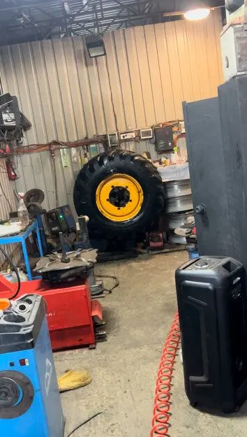
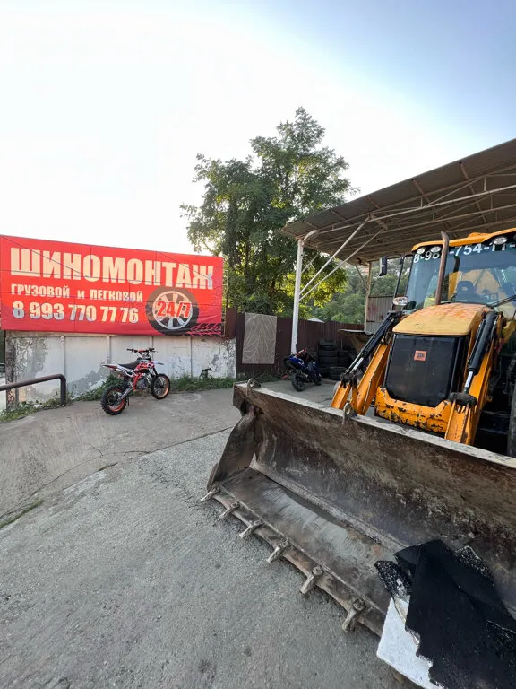

Шиномонтаж · Сочи · Виноградный переулок, 7Б
Шиномонтаж в Сочи для легковых и грузовых – по записи
Запишитесь к своему времени и не ждите в очереди. Ремонт проколов и боковых порезов, балансировка, покраска и проточка дисков.
- Легковые, грузовые и спецтехника
- Ремонт боковых порезов
- Покраска и проточка дисков

Цены
Цена шиномонтажа зависит от радиуса и типа машины. Точную сумму назовём при записи.
Шиномонтаж
- Переобувка легкового автозависит от радиусауточнить
- Грузовой шиномонтажуточнить
- Балансировкауточнить
Ремонт и диски
- Ремонт прокола и бокового порезавулканизацияуточнить
- Порошковая покраска дисков R154 шт., с правкой и проточкой14 000 ₽
- Хранение шинуточнить
При записи назовите марку авто и радиус колёс – скажем точную сумму.
Как проходит
- 01
Записались к своему времени
На сайте за минуту, в WhatsApp или по телефону.
- 02
Приехали – начинаем
Легковая, грузовик или спецтехника.
- 03
Ремонтируем и балансируем
Прокол, порез, переобувка – на месте.
- 04
Ставим колёса и отпускаем
Затягиваем крепёж, отдаём машину.



Что делаем
Легковые и грузовые
Шиномонтаж для легковых, грузовиков и спецтехники.
Боковые порезы
Ставим латку так, чтобы не было шишек.
Диски
Порошковая покраска, алмазная проточка, прокатка и правка.
Хранение шин
Оставьте сезонный комплект у нас.
Отзывы с Яндекс.Карт
«Шиномонташ хороший, приехал в 3 часа ночи и бес проблем отремонтировали колесо. спасибо за расторопность и качество.»
Павел Антон · 26 июля 2023
«Порезал с боку колесо,поставили латку,ни шишек ни чего не вылезло,отбалансировали колесо,всё идеально,сделали быстро,а главное качественно.»
Максим Бузыкин · 16 сентября 2023
«Добрый день! Поменяли летнию резину на зимнюю быстро, недорого, особая благодарность Кириллу, молодец! Теперь только сюда буду ездить....»
Владимир · 27 декабря 2022
Отзывы с карточки на Яндекс.Картах, без правок.
Частые вопросы
Можно приехать ночью?
По карточке мы работаем круглосуточно. Ночью лучше сначала написать в WhatsApp – ответим, что мастер на месте, и вы не поедете зря.
Беретесь за грузовые колёса?
Да, делаем грузовой шиномонтаж и восстанавливаем грузовые шины. Напишите размер колеса – скажем, когда сможем принять.
Сколько стоит покраска дисков?
Порошковая покраска четырёх дисков R15 – 14 000 ₽, в цену входят химобработка, пескоструй, алмазная проточка, правка и напыление. Для других радиусов – уточнить.
Как оплатить?
Наличными, картой, переводом или по СБП.
Запишитесь к своему времени
- Адрес
- Виноградный переулок, 7Б, Сочи
- Часы
- Круглосуточно, без выходных
- Телефон
- +7 (993) 770-77-76